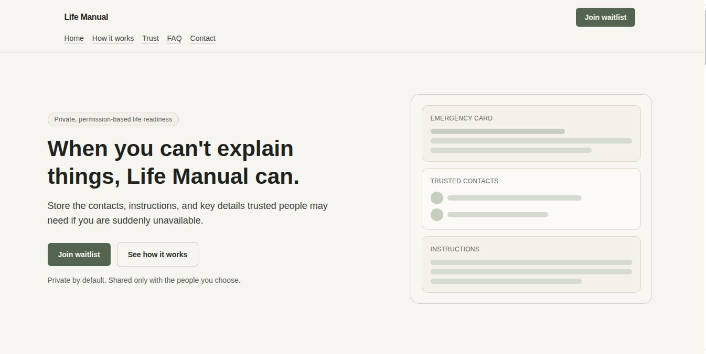

Life Manual
ShippedA waitlist landing-page product focused on helping important personal information reach the right person at the right time.
- Type Waitlist / landing-page product.
- Why it matters Turns a serious real-life problem into a clear, trustworthy web experience.
Stack
HTML
CSS
JavaScript